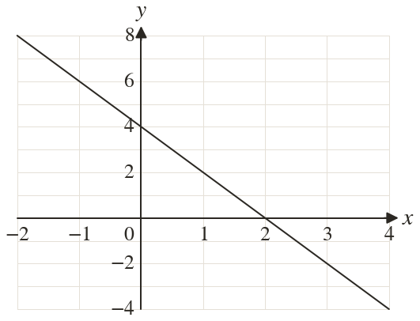
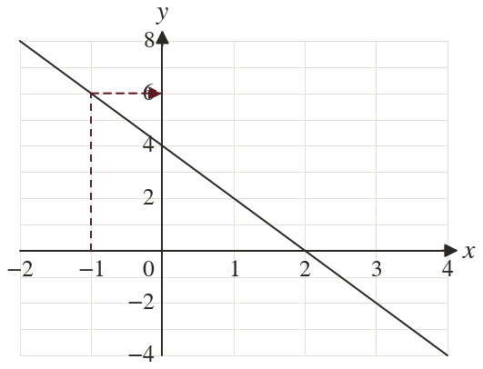
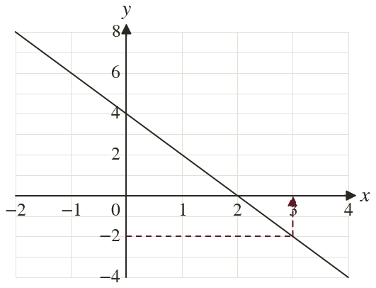
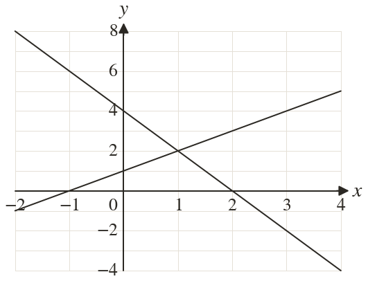

Westonbirt Maths · Linear Graphs and y = mx + c
Drawing Linear Graphs
Name: ______________________ Date: ____________
1
The graph shows
Use it to find when
Use it to find when
2
Use the graph to find when
3
Use the graph to find when
4
Use the graph to find when
5
Where does the line cross each axis?
Ext
Draw on the same grid. Where do the two lines cross? Check both equations.



